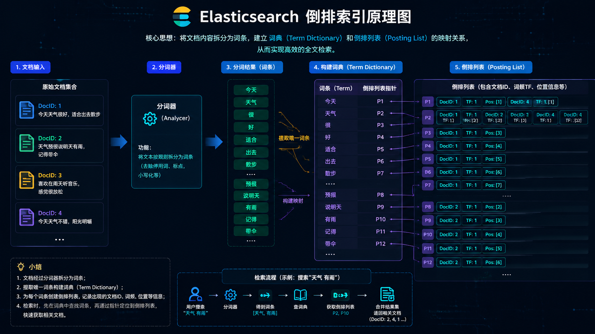
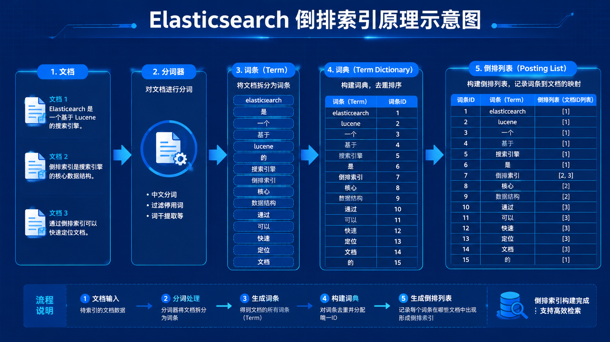
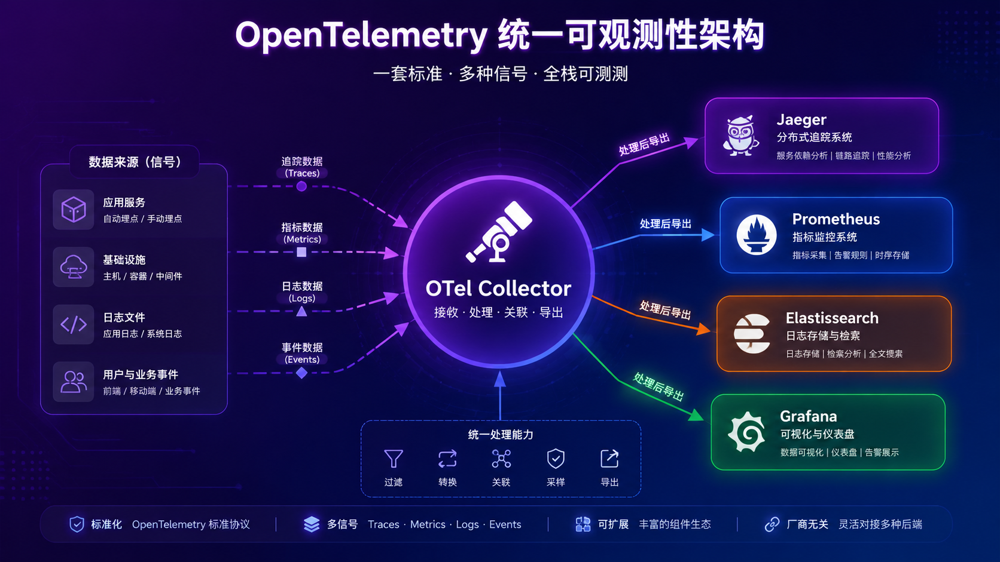

☁️ 云原生可观测项目
从零开始到上手
用 7 个开源项目搭建你的可观测性平台
Elasticsearch · Kibana · Prometheus · Grafana · OpenTelemetry · Fluent Bit · Jaeger
2026-05-07
🖼️ 可观测性全景概念
下图为可观测性三大支柱与数据流概念图：应用数据 → 采集 → 处理 → 存储 → 可视化。

数据从应用流出，经采集/处理/存储，最终在 Dashboard 中展示
🤔 第 1 章 · 为什么要学可观测性？
一个真实场景
你在半夜收到告警："用户登录服务响应时间飙升到 10 秒"。这时候你需要回答三个问题：哪里慢了？为什么慢了？影响谁了？ 没有可观测性，你只能 SSH 到服务器上猜。有了它，你打开一个 Dashboard 就能看到所有信息。
❌ 没有可观测性
- 每台机器 SSH 上去看日志
- 只能"猜"问题在哪
- 排查耗时 1~2 小时
- 依赖个人经验
- 经常被"重启大法"糊弄
✅ 有可观测性
- Dashboard 上一眼看出问题
- 从指标趋势定位故障时间点
- 从日志找到具体错误
- 从 Trace 追踪到慢在哪行代码
- 排查缩短到 5~15 分钟
🔑 三大信号缺一不可
- 指标：告诉我"出问题了"
- 日志：告诉我"为什么出"
- 追踪：告诉我"在哪里出的"
核心目标：本报告帮你把 7 个工具串起来，理解它们各自解决什么问题，以及怎么实际用起来。不是讲原理，而是教你动手。
🏗️ 7 个项目组成什么？
flowchart TB
subgraph APP["应用层"]
A1["你的微服务"]
end
subgraph COLLECT["数据采集层"]
FB["Fluent Bit
日志采集 ~650KB"]
OTelS["OTel SDK
自动埋点"]
end
subgraph PROCESS["数据处理层"]
OTelC["OTel Collector
接收→处理→转发"]
LS["Logstash
Grok 解析"]
end
subgraph STORE["存储层"]
ES["Elasticsearch
全文搜索"]
PRO["Prometheus
指标 TSDB"]
end
subgraph VIZ["可视化层"]
G["Grafana
统一 Dashboard"]
KB["Kibana
ES 专用 UI"]
J["Jaeger
Trace 瀑布图"]
end
A1 --> FB & OTelS
FB --> LS --> ES --> KB
OTelS --> OTelC
OTelC --> PRO --> G
OTelC --> ES
OTelC --> J
数据流：应用产生数据 → 采集层收集 → 处理层转换 → 存储层保存 → 可视化层展示。每个环节都有对应的开源工具。
📌 核心概念：存储、搜索、告警、可视化
Elasticsearch 日志存储 + 搜索
把日志当成"文档"存进去，然后通过 REST API 搜索。支持全文检索（像 Google 一样搜日志）、聚合分析（统计错误率）。
类比：一个专门为搜索优化的数据库。
Prometheus 指标存储 + 告警
每隔 15 秒从你的应用"拉取"一次 CPU 使用率、请求数等数值，存为时间序列。定义告警规则：如果某指标 > 阈值就发通知。
类比：一个专门存"数字"的系统。
Grafana / Kibana 可视化
把存好的数据画成图表。Grafana 是"通用画图板"，能接各种数据源。Kibana 是 ES 的"御用画图板"。
类比：Excel 的图表功能，但数据自动刷新。
OpenTelemetry 统一采集
定义了一套标准：不管什么语言的应用，用同样的方式发出 Trace/Metric/Log。Collecor 做中转站，负责收数据 → 处理 → 转发到后端。
类比：USB-C 接口，一个接口通所有设备。
🔎 第 2 章 · Elasticsearch — 入门
ES 是什么？
一个分布式的 RESTful 搜索和分析引擎。基于 Apache Lucene 构建，核心能力是全文搜索。
通俗理解：传统数据库（MySQL）搜 "error" 用 LIKE '%error%'，慢且找不到相关结果。ES 做了分词和索引，搜 "error" 能瞬间找到所有包含"error"、"error occurred"、"error_code" 的日志，还能按匹配度排序。
快速启动（2 分钟）
# 用 Docker 启动
docker run -d --name es \
-p 9200:9200 \
-e "discovery.type=single-node" \
-e "xpack.security.enabled=false" \
docker.elastic.co/elasticsearch/elasticsearch:8.15.0
# 验证
curl http://localhost:9200
# → {"name":"node-1","cluster_name":"docker","version":{"number":"8.15.0"}...}
一起启动 Kibana
docker run -d --name kibana \
-p 5601:5601 \
--link es \
docker.elastic.co/kibana/kibana:8.15.0
💡 访问 http://localhost:9200 看到 JSON 响应 = ES 跑起来了。访问 http://localhost:5601 = Kibana 跑起来了。
🖼️ Elasticsearch 倒排索引工作原理

文档 → 分词器 → 词条 → 词典 + 倒排列表 → 快速搜索。这是 ES 能"毫秒级搜索"的核心秘密。
📦 ES 三大核心概念
Index（索引）≈ 数据库的表
存同一类文档的地方。ES 存的是 JSON 文档。
PUT /my-logs
# 创建一个名为 my-logs 的索引
POST /my-logs/_doc
{
"@timestamp": "2026-05-07T10:00:00",
"level": "error",
"message": "Connection refused",
"service": "api"
}
Document（文档）≈ 一行记录
用 JSON 表示，每个文档有唯一的 _id。字段自动推断类型（字符串=text/keyword，数字=long/double，时间=date）。
# 检索
GET /my-logs/_doc/ID
# 搜索
GET /my-logs/_search
{
"query": {
"match": { "message": "error" }
}
}
Mapping（映射）≈ 表结构定义
每个字段的类型定义。可以自动推断，也可以手动定义。
# 查看 mapping
GET /my-logs/_mapping
# 手动定义
PUT /my-logs/_mapping
{
"properties": {
"response_time": { "type": "integer" },
"message": { "type": "text" },
"level": { "type": "keyword" }
}
}
💡 text vs keyword：text 会分词（用来做全文搜索），keyword 不分词（用来做精确匹配和聚合）。同一个字段可以同时定义两种类型。
📝 ES CRUD 操作（用 Dev Tools 试试）
在 Kibana 左侧菜单 Dev Tools → Console 中执行以下所有操作。
Create（新增文档）
# 自动生成 ID
POST /products/_doc
{
"name": "笔记本电脑",
"price": 6999,
"stock": 100
}
# 指定 ID
PUT /products/_doc/1
{
"name": "无线鼠标",
"price": 199,
"stock": 500
}
Read（读取文档）
# 根据 ID 获取
GET /products/_doc/1
# 搜索全部
GET /products/_search
{
"query": { "match_all": {} }
}
# 条件搜索
GET /products/_search
{
"query": {
"match": { "name": "笔记本" }
}
}
Update（更新）
# 部分更新
POST /products/_update/1
{
"doc": {
"stock": 450
}
}
# 全量替换
PUT /products/_doc/1
{
"name": "无线鼠标 GT",
"price": 249,
"stock": 500
}
Delete（删除）
# 删除文档
DELETE /products/_doc/1
# 按条件删除
POST /products/_delete_by_query
{
"query": {
"range": {
"price": { "lt": 100 }
}
}
}
# 删除索引（整个表）
DELETE /products
⚠️ 注意：DELETE 不可恢复！线上操作前先 GET 确认。
🔍 ES Query DSL — 从 match 到 bool
1. match（分词搜索，最常用）
# 搜索 message 字段包含 "error connection"
GET /logs/_search
{
"query": {
"match": {
"message": "error connection timeout"
}
}
}
# "error connection timeout" 被分为 [error, connection, timeout]
# 匹配包含其中任意词的文档，按匹配度评分排序
2. match_phrase（短语匹配）
# 必须包含整个短语，词序一致
GET /logs/_search
{
"query": {
"match_phrase": {
"message": "connection timeout"
}
}
}
# 匹配 "connection timeout" 但不匹配 "connection was timeout"
3. term（精确匹配，keyword 字段用）
# term 不走分词，精确匹配整个值
GET /logs/_search
{
"query": {
"term": { "level": "error" }
}
}
# 注意: level 必须是 keyword 类型，不能用 text
4. range（范围查询）
GET /logs/_search
{
"query": {
"range": {
"response_time": {
"gt": 1000,
"lte": 5000
}
}
}
}
# gt > gte ≥ lt < lte ≤
5. exists（检查字段存在）
# 筛选有 error_trace 字段的文档
GET /logs/_search
{
"query": {
"exists": { "field": "error_trace" }
}
}
🧩 ES Bool 查询 — 搭积木
bool 是 ES 最强大的查询容器，4 种"积木块"任意组合，可以无限嵌套。
must（必须满足，影响评分）
"must": [
{ "match": { "message": "error" } },
{ "match": { "message": "database" } }
]
类似 AND，文档必须同时匹配这两个条件
filter（必须满足，不影响评分）
"filter": [
{ "term": { "status": "active" } },
{ "range": { "response_time": { "lte": 500 } } }
]
不计算 _score，性能更好，结果可缓存
should（最好满足，提升评分）
"should": [
{ "term": { "level": "critical" } },
{ "match": { "message": "urgent" } }
]
不强制，但满足越多评分越高。可以设 minimum_should_match
must_not（排除）
"must_not": [
{ "term": { "level": "debug" } },
{ "term": { "service": "healthcheck" } }
]
排除 debug 日志和健康检查请求
💡 实战：搜索最近 6 小时内 status≥400、response_time>1000ms 的活跃请求日志，排除已知的 healthcheck 服务，优先展示 critical 级别的。
🧩 Bool 实战：完整查询示例
GET /nginx-logs/_search
{
"query": {
"bool": {
"must": [
{ "match": { "message": "error" } }
],
"filter": [
{ "term": { "status_code": "500" } },
{ "range": { "@timestamp": { "gte": "now-6h" } } }
],
"must_not": [
{ "term": { "service.keyword": "healthcheck" } }
],
"should": [
{ "term": { "env.keyword": "production" } }
]
}
},
"sort": [ { "@timestamp": "desc" } ],
"size": 50
}
# 含义：搜索最近 6 小时 status=500 包含 "error" 的 nginx 日志，
# 排除健康检查，production 环境的优先展示，按时间倒序取 50 条。
💡 Dev Tools 技巧：按住 Ctrl+Enter 执行，结果在右侧看。可以用 Tab 键自动补全索引名和字段名。
📊 ES 聚合 — 从原始数据到统计
聚合帮你回答"有多少个 500 错误？""每小时有多少请求？""平均响应时间多少？"
1. terms（分组计数）
# 按状态码分组统计
GET /nginx-logs/_search
{
"size": 0,
"aggs": {
"status_count": {
"terms": { "field": "status_code", "size": 5 }
}
}
}
# 结果:
# 200 → 15234
# 404 → 342
# 500 → 56
# 301 → 210
# 403 → 12
2. date_histogram（按时间统计）
# 每小时请求数
GET /nginx-logs/_search
{
"size": 0,
"aggs": {
"hourly": {
"date_histogram": {
"field": "@timestamp",
"fixed_interval": "1h"
}
}
}
}
# → 10:00: 123条, 11:00: 156条, 12:00: 89条 ...
# fixed_interval: 1h/30m/5m
# calendar_interval: month/quarter/year
3. avg/sum/stats 统计聚合
# 响应时间统计
GET /nginx-logs/_search
{
"size": 0,
"aggs": {
"avg_response": { "avg": { "field": "response_time" } },
"max_response": { "max": { "field": "response_time" } },
"stats_response": { "stats": { "field": "response_time" } }
}
}
# stats 一次返回 count/min/max/avg/sum
4. cardinality（去重计数）
# 有多少个独立用户访问？
GET /nginx-logs/_search
{
"size": 0,
"aggs": {
"unique_ips": {
"cardinality": { "field": "client_ip" }
}
}
}
# ≈ SELECT COUNT(DISTINCT client_ip)
5. percentiles（百分位）
# P50/P95/P99 延迟
GET /nginx-logs/_search
{
"size": 0,
"aggs": {
"latency_pct": {
"percentiles": {
"field": "response_time",
"percents": [50, 95, 99]
}
}
}
}
# 如果 P99 是 500ms，说明 99% 的请求都在 500ms 以内
💡 size: 0 表示不返回文档列表，只返回聚合结果。省带宽、省内存。
🧩 嵌套聚合实战：分组再统计
真实需求："按状态码分组后，再算每组 24 小时的分布"
GET /nginx-logs/_search
{
"size": 0,
"aggs": {
"by_service": {
"terms": { # 第 1 层：按服务名分组
"field": "service.keyword",
"size": 5
},
"aggs": {
"avg_latency": {
"avg": { "field": "response_time" } # 第 2 层：每组算平均
},
"p99_latency": {
"percentiles": {
"field": "response_time",
"percents": [99]
}
},
"hourly_trend": {
"date_histogram": { # 第 2 层：按小时趋势
"field": "@timestamp",
"fixed_interval": "1h"
}
}
}
}
}
}
# 结果示例：
# api: avg=120ms, p99=450ms, hourly=[...]
# web: avg=80ms, p99=320ms, hourly=[...]
# auth: avg=350ms, p99=1200ms, hourly=[...]
💡 怎么做 Dashboard：在 Dev Tools 里写好这个查询，确认数据正确，然后去 Kibana Lens 拖同样的字段。Lens 自动帮你生成可视化，不用手写 JSON。
🖥️ Kibana UI 实操 — 3 步上手
打开 http://localhost:5601，跟着做。
第 1 步：创建 Data View
- 左侧菜单 → Stack Management → Data Views
- 点 Create data view
- Name:
nginx-logs - Index pattern:
nginx-logs-*（匹配所有 nginx-logs 开头的索引） - Timestamp:
@timestamp - 点 Save data view to Kibana
🔑 Data View 定义了 Kibana 去哪查数据、用什么字段做时间过滤。配错就搜不到数据。
第 2 步：Discover 搜日志
- 左侧 → Discover
- 顶部选
nginx-logs 数据视图 - 右上角选时间范围
Last 7 days - 搜索栏输 KQL：
status_code >= 400 - 点 Update 查看结果
- 左侧字段列表点
response_time 加为列 - 点击任一行展开所有字段看详情
💡 KQL 示例：status_code: >= 400 · response_time: > 1000 · NOT level: debug
第 3 步：Lens 可视化
- 左侧 → Dashboard → Create dashboard
- 点 Create visualization
- 顶部选
nginx-logs 数据视图 - 右侧拖
@timestamp 到 X 轴（水平轴） - 拖
status_code 到 Y 轴，选 Count - 拖
status_code 到 Breakdown（按状态码分组） - 点 Save and return
- 再点 Create visualization 加第二个图
- 这次拖
response_time 到 Y 轴，选 Average - 保存整个 Dashboard
🔧 常见问题排错
- 搜不到数据：① 检查 Data View 的索引匹配 ② 时间范围 ③ ES 真的有数据吗？
- 字段没出现：刷新字段列表（Discover 右上角的刷新按钮）
- 想调试复杂查询：Dev Tools 写 ES API 测试，再贴到 Dashabord
- 自动刷新：右上角 Refresh 设置 5s/10s/30s
⚙️ Logstash — 日志加工厂
Logstash 的核心模型是 Pipeline：输入 → 过滤 → 输出
flowchart LR
I["Input
beats/tcp/syslog"] --> F["Filter
grok/date/mutate/geoip"]
F --> O["Output
es/kafka/s3/csv"]
完整配置：Nginx 日志解析
input {
beats { port => 5044 }
}
filter {
# Grok：把一行 nginx 日志拆成字段
grok {
match => {
"message" => "%{IP:client_ip} %{HTTPDATE:timestamp} %{WORD:method} %{URIPATHPARAM:uri} %{NUMBER:status_code} %{NUMBER:bytes}"
}
}
# 设置时间字段
date {
match => ["timestamp", "dd/MMM/yyyy:HH:mm:ss Z"]
target => "@timestamp"
}
# 经纬度
geoip { source => "client_ip" }
# 类型转换
mutate {
convert => {
"status_code" => "integer"
"bytes" => "integer"
}
rename => { "bytes" => "response_size" }
}
}
output {
elasticsearch {
hosts => ["localhost:9200"]
index => "nginx-logs-%{+YYYY.MM.dd}"
}
}
Grok 常用模式速查
| 模式 | 匹配 |
|---|
| IP | 192.168.1.1 |
| URIPATHPARAM | /api/v1/users?id=1 |
| HTTPDATE | 07/May/2025:12:00:00 +0000 |
| NUMBER | 200, 3.14 |
| WORD | abc, GET, POST |
| GREEDYDATA | 匹配任意内容 |
💡 在线调试：用 grokdebugger.com 贴一行日志测试 Grok 模式是否正确。
⚠️ 注意内存：Logstash 基于 JVM，单实例 ~1GB 内存。轻量场景用 Fluent Bit（~650KB）替代。
💨 Fluent Bit — 轻量日志采集
⚡ 核心优势
C 语言编写，内存 ~650KB（空闲）
Fluentd: ~40MB · Logstash: ~1GB+
性能是 Fluentd 的 10~40 倍
6 阶段 Pipeline
flowchart LR
I["INPUT"]-->P["PARSER"]-->F["FILTER"]-->B["BUFFER"]-->R["ROUTING"]-->O["OUTPUT"]
# fluent-bit.conf — 采集 Nginx 日志 → ES
[SERVICE]
flush 5
log_level info
[INPUT]
name tail
path /var/log/nginx/access.log
tag nginx.access
parser nginx
mem_buf_limit 5MB
[FILTER]
name grep
match nginx.*
regex status 5[0-9]{2} # 只保留 5xx 日志
[FILTER]
name modify
match nginx.*
add env production # 添加环境标签
[OUTPUT]
name es
match nginx.access
host 192.168.1.100
port 9200
index nginx-logs-${DATE}
generate_id on
[OUTPUT]
name stdout # 同时打印到控制台
match *
format json_lines
| Fluent Bit | Fluentd | Logstash |
|---|
| 内存 | ~650 KB | ~40 MB | ~1 GB |
| 语言 | C | Ruby | JRuby (JVM) |
| 适用场景 | K8s DaemonSet / 边缘 | 数据中心 | 复杂 Pipeline |
📡 第 3 章 · Prometheus — 指标系统入门
Prometheus 是什么？
专门采集和存储"数字"的系统。每隔一小段时间（默认 15s）去你的应用拉一次指标数据（CPU 使用率、请求数、延迟等），存成时间序列。
快速启动
# prometheus.yml
global:
scrape_interval: 15s
scrape_configs:
- job_name: 'prometheus'
static_configs:
- targets: ['localhost:9090']
---
# 用 Docker 启动
docker run -d --name prom \
-p 9090:9090 \
-v $(pwd)/prometheus.yml:/etc/prometheus/prometheus.yml \
prom/prometheus
验证：访问 http://localhost:9090/targets 看到所有采集目标。
flowchart LR
APP["你的应用
暴露 /metrics"] -->|"15s 拉取一次"| PRO["Prometheus
TSDB 存储"]
PRO -->|"PromQL"| G["Grafana"]
PRO -->|"告警"| AM["Alertmanager"]
AM -->|"通知"| SL["Slack/邮件"]
4 种指标类型
| 类型 | 说明 | 示例 |
|---|
| Counter | 只增不减（请求总数） | http_requests_total |
| Gauge | 可增可减（CPU 温度） | node_cpu_temp |
| Histogram | 采样分布（可算 P99） | duration_bucket |
| Summary | 预计算分位数 | rpc_duration |
💡 Pull 模型：Prometheus 主动"拉"数据，而不是应用"推"数据。好处是 Prometheus 控制采集频率，挂了也不丢队列中的指标。被拉的应用只需要暴露一个 /metrics 端点。
📝 PromQL — 从"查 up"到"算 P99"
打开 Prometheus http://localhost:9090/graph，在输入框里跟着练。
📍 第 1 步：基础选择
# 看所有指标
up
# → prometheus=1, node=1, api=0 ...
# 带标签过滤
up{job="prometheus"}
up{instance="localhost:9090"}
# 标签运算符
# = 等于 != 不等于
# =~ 正则 !~ 排除正则
up{job=~"api|web", status!="dev"}
⏱️ 第 2 步：时间范围
# 看过去 5 分钟的原始数据
up[5m]
# 但 Range Vector 不能直接画图！
# 必须加函数才能用
⚡ 第 3 步：rate() — 最重要的函数
# 每秒请求数（最常用！）
rate(http_requests_total[5m])
# 增长率
increase(http_requests_total[1h])
# 各服务的 QPS
sum by(service) (
rate(http_requests_total[5m])
)
# → service="api": 120qps
# service="web": 200qps
📊 第 4 步：聚合
# Top 3 最慢服务
topk(3, rate(http_requests_total[5m]))
# 取第 95 百分位（需要 Histogram）
histogram_quantile(0.95,
rate(duration_seconds_bucket[5m])
)
# 错误率百分比
sum by(service) (
rate(http_requests_total{status=~"5.."}[5m])
) / sum by(service) (
rate(http_requests_total[5m])
) * 100
💡 心法口诀：选指标 + 贴标签 + 套 rate + 按 by 分组。Counter 必须先 rate() 再看，Gauge 可以直看。
🎯 PromQL 完整练习清单
打开 Prometheus /graph，逐条输入查看效果。
| # | 你要做什么 | PromQL |
|---|
| 1 | 看所有采集目标是否在线 | up |
| 2 | 看某个 job 的在线状态 | up{job="prometheus"} |
| 3 | 每秒请求数 | rate(http_requests_total[5m]) |
| 4 | 每个服务的 QPS | sum by(job) (rate(http_requests_total[5m])) |
| 5 | CPU 使用率百分比 | (1 - avg by(instance)(rate(node_cpu_seconds_total{mode="idle"}[5m]))) * 100 |
| 6 | 内存使用率 | node_memory_MemTotal_bytes - node_memory_MemFree_bytes |
| 7 | 磁盘剩余空间百分比 | node_filesystem_avail_bytes / node_filesystem_size_bytes * 100 |
| 8 | P99 请求延迟 | histogram_quantile(0.99, rate(duration_bucket[5m])) |
| 9 | 1 小时内请求数增量 | increase(http_requests_total[1h]) |
| 10 | CPU > 80% 的实例 | (rate(node_cpu_seconds_total{mode="idle"}[5m])) < 0.2 |
| 11 | 对比昨天和今天的流量 | rate(http_requests_total[5m]) / rate(http_requests_total[5m] offset 1d) |
| 12 | QPS 最高的 3 个服务 | topk(3, sum by(job)(rate(http_requests_total[5m]))) |
💡 在 Prometheus UI 的 Table 标签看精确值，Graph 标签看趋势。练习从 #1 开始逐个做，理解每个查询在干什么。
🖥️ Prometheus Web UI 实操
📝 /graph — Expression Browser
- 输入 PromQL，点 Execute 或按 Shift+Enter
- Table：精确数值，适合验证查询是否正确
- Graph：折线图，适合观察趋势
- 输入框支持自动补全——打几个字母就出提示
- 点 ➕ Add Panel 可以对比多个查询
🎯 /targets — 采集目标状态
- ● UP（绿色）：正常采集
- ● DOWN（红色）：无法连接（点 error 链接看原因）
- 显示：Job 名、Endpoint、Last Scrape 时间
- 最常见问题：Target DOWN → 检查应用是否运行、端口是否开放、防火墙是否阻止
⚙️ Status 菜单
- Service Discovery：K8s 部署时查看自动发现的目标和标签
- Configuration：当前 prometheus.yml 配置
- Rules：告警规则和预计算规则的状态
- Runtime：内存使用、goroutine 数等运行时信息
🔔 配置告警规则
# 在 prometheus.yml 中引用规则文件
rule_files:
- "alerts.yml"
# alerts.yml
groups:
- name: example
rules:
- alert: HighErrorRate
expr: rate(http_requests_total{status=~"5.."}[5m]) > 0.01
for: 1m
labels: { severity: critical }
annotations:
summary: "错误率超过 1%"
📈 Grafana — 配数据源到建 Dashboard
访问 http://localhost:3000（默认 admin/admin）
第 1 步：配 Prometheus 数据源
- 左侧齿轮 → Data Sources → Add data source
- 搜 Prometheus 选中
- URL 填
http://localhost:9090 - 点 Save & Test，看到绿色"Success" 就对了
# 也可以用 Provisioning 自动配
# /etc/grafana/provisioning/datasources/prometheus.yml
apiVersion: 1
datasources:
- name: Prometheus
type: prometheus
url: http://prometheus:9090
第 2 步：建第一个 Dashboard
- 左侧 + → New Dashboard → Add visualization
- 选 Prometheus 数据源
- 查询编辑器输
rate(http_requests_total[5m]) - 右侧面板设置：Title="QPS"、Unit="req/s"
- 点 Apply → Save dashboard，取名 "服务监控"
第 3 步：Variables 实现下拉过滤
- Dashboard 设置 → Variables → Add variable
- Name:
job, Type: Query - Query:
label_values(up, job) - 在 Panels 中引用：
rate(http_requests_total{job="$job"}[5m]) - 顶部出现下拉菜单，选不同 job 数据自动切换
第 4 步：Explore 模式调试
- 左侧罗盘图标 → Explore
- 不用建 Dashboard 也能直接写 PromQL
- 支持查多个数据源（选 Mixed）
- 写好的查询可以直接 Add to dashboard
⚠️ 关键认知：Grafana 是"查询+展示"引擎，不存监控数据。数据存在 Prometheus/Loki/ES。重启 Grafana 不会丢 Dashboard 配置，但后端挂了就看不了图。
🖼️ OpenTelemetry 统一架构

OTel Collector 是数据中枢，接收 SDK 数据后分发到 Jaeger/Prometheus/ES/Grafana 等后端。
🔗 第 4 章 · OpenTelemetry — 为什么要统一
❌ 没有 OTel 之前
你的应用里可能有这些代码：
# Trace 用 Jaeger API
from jaeger_client import Config
# Metrics 用 Prometheus 库
from prometheus_client import Counter
# 日志用标准 logging
import logging
三个不同的库、不同接口、不互通。
换后端就要改代码。
TraceID 无法关联到日志。
✅ 有 OTel 以后
# 只用 OTel SDK
from opentelemetry import trace
tracer = trace.get_tracer(__name__)
with tracer.start_as_current_span("handle_request") as span:
# 自动记录 TraceID + Metrics
handle_request()
一套 API 覆盖三种信号。
想换后端？只改 Collector 配置。
TraceID 自动注入到日志。
💡 一句话总结
OTel = 可观测性的 USB-C 接口。应用只需对接一套标准，数据通过统一的 Collector 分发到任何后端（Jaeger/Prometheus/ES/Grafana Cloud）。
🔧 OTel SDK 实战 — Python 示例
1. 手动埋点
pip install opentelemetry-api \
opentelemetry-sdk \
opentelemetry-exporter-otlp
# 代码
from opentelemetry import trace
from opentelemetry.exporter.otlp.proto.grpc.trace_exporter import OTLPSpanExporter
from opentelemetry.sdk.trace import TracerProvider
from opentelemetry.sdk.trace.export import BatchSpanProcessor
# 设置 TracerProvider
trace.set_tracer_provider(TracerProvider())
tracer = trace.get_tracer(__name__)
# 配置 Exporter → OTel Collector
span_processor = BatchSpanProcessor(
OTLPSpanExporter(endpoint="http://collector:4317")
)
trace.get_tracer_provider().add_span_processor(span_processor)
# 埋点
with tracer.start_as_current_span("query_database") as span:
span.set_attribute("db.system", "postgresql")
span.set_attribute("db.query", "SELECT * FROM users")
# ... 你的 SQL 查询 ...
# 记录事件
span.add_event("query_completed", {"rows": "42"})
2. 自动埋点（推荐）
# 安装自动埋点包
pip install opentelemetry-instrumentation \
opentelemetry-instrumentation-flask \
opentelemetry-instrumentation-requests
# 一行命令启动 — 自动拦截 Flask/requests/DB 等
opentelemetry-instrument \
--traces_exporter otlp \
--metrics_exporter otlp \
python app.py
# 或者代码里指定
from opentelemetry.instrumentation.flask import FlaskInstrumentor
from opentelemetry.instrumentation.requests import RequestsInstrumentor
FlaskInstrumentor().instrument()
RequestsInstrumentor().instrument()
3. 日志关联 Trace
# Python logging + OTel
from opentelemetry.instrumentation.logging import LoggingInstrumentor
# 自动在日志中注入 trace_id / span_id
LoggingInstrumentor().instrument()
import logging
logging.error("数据库查询超时", extra={
"db": "postgres",
"query_time_ms": 3500
})
# → 日志自动带上 trace_id，在 Kibana 里能关联到 Trace
⚙️ OTel Collector — 数据中转站
flowchart LR
SDK["OTel SDK"] -->|"OTLP :4317"| RC["Receivers
otlp/jaeger/prometheus"]
RC --> PROC["Processors
batch/memory_limiter/tail_sampling"]
PROC --> EXP["Exporters
otlp/prometheus/jaeger/debug"]
EXP --> J["Jaeger"]
EXP --> PRO["Prometheus"]
EXP --> ES["Elasticsearch"]
# collector.yml
receivers:
otlp:
protocols:
grpc: { endpoint: "0.0.0.0:4317" }
http: { endpoint: "0.0.0.0:4318" }
processors:
batch:
timeout: 1s
send_batch_size: 1024
memory_limiter:
check_interval: 1s
limit_mib: 512
tail_sampling:
decision_wait: 30s
policies:
- name: errors
type: status_code
config: { status_code: ERROR }
exporters:
otlp:
endpoint: "jaeger:4317"
tls: { insecure: true }
prometheus:
endpoint: "0.0.0.0:8889"
debug:
verbosity: detailed
service:
pipelines:
traces:
receivers: [otlp]
processors: [memory_limiter, tail_sampling, batch]
exporters: [otlp, debug]
metrics:
receivers: [otlp]
processors: [batch]
exporters: [prometheus, debug]
💡 三种部署模式：(1) Sidecar 每个 Pod 旁跑一个 Collector (2) Gateway 独立集群 (3) Agent 每台机器一个 DaemonSet
🔬 Jaeger — 看第一条 Trace
flowchart LR
APP["OTel SDK
自动埋点"] -->|"OTLP"| COLL["OTel Collector"]
COLL -->|"OTLP"| JAEGER["Jaeger
Collector→Storage→Query"]
JAEGER -->|"Web UI :16686"| JUI["Jaeger UI
搜索 · 瀑布图 · 服务图"]
JAEGER -->|"Grafana 数据源"| G["Grafana Trace 面板"]
一步启动
docker run -d --name jaeger \
-p 16686:16686 -p 4317:4317 -p 4318:4318 \
jaegertracing/all-in-one:latest
# :16686 → Web UI
# :4317 → OTLP gRPC 端口
# :4318 → OTLP HTTP 端口
在 Grafana 中配 Jaeger
# Data Sources → Add → Jaeger
# URL: http://localhost:16686
# 然后在 Explore 中选 Jaeger:
# · Search: 按服务名找 Trace
# · TraceID: 直接粘贴 ID
怎么看瀑布图
- 搜索：按 Service 选 → 点 Find Traces
- 概览：看到所有匹配的 Trace 列表（耗时、span 数）
- 点一个进去：水瀑布图展示完整调用链
- 找慢 span：红色的 = 错误，长条的 = 慢，往往就是根因
- 点 span：看详细标签（数据库查询语句、HTTP URL、异常堆栈）
- Service Graph：查看服务间调用关系和请求量
💡 实践：在 OTel SDK 埋点 → Collector 配置输出去 Jaeger → Jaeger UI 看 Trace。全链路通了之后，你就能在 Grafana 里从指标异常跳转到对应的 Trace 了。
🔄 第 5 章 · 项目关系与场景选型
⚔️ 竞争关系
- Fluent Bit vs Logstash：内存差 1000 倍（650KB vs 1GB）。简单场场景直接 FB，复杂 Grok 解析用 Logstash
- OTel Collector vs Fluent Bit：OTel 要统一三信号，FB 专精日志。最新 FB v3 也开始支持 Traces/Metrics
- Kibana vs Grafana：Kibana 绑定 ES 生态，Grafana 万能画图板。很多公司两个都用
🤝 互补关系
- Fluent Bit → ES：采集日志 + 存储搜索，最经典组合
- Prometheus → Grafana：指标采集 + 可视化，黄金 CP
- OTel SDK → Collector → Jaeger：全链路追踪流水线
- Grafana + ES：用 Grafana 画 ES 数据，比 Kibana 灵活
| 场景 | 推荐组合 | 一句话 |
|---|
| 日志搜索 | Fluent Bit → ES → Kibana | FB 采集，ES 存储，Kibana 搜索 |
| 指标监控 | Prometheus → Grafana | Prometheus 存指标，Grafana 画图 |
| 全栈可观测 | OTel + Prometheus + Grafana + ES + Jaeger | OTel 统一采集，Grafana 统一可视化 |
| 分布式追踪 | OTel SDK → Collector → Jaeger | 一行配置改 Collector 就能换后端 |
| 新项目推荐 | OTel Collector + Grafana + Prometheus | 最现代化，解耦最好 |
🏗️ 第 6 章 · 落地部署
🌱 个人/小团队
# docker-compose.yml
services:
prometheus:
image: prom/prometheus
ports: ["9090:9090"]
grafana:
image: grafana/grafana
ports: ["3000:3000"]
elasticsearch:
image: elasticsearch:8.x
environment:
- discovery.type=single-node
kibana:
image: kibana:8.x
ports: ["5601:5601"]
🏢 中型团队
- 采集层：Fluent Bit + OTel Collector
- 缓冲层：Kafka 削峰填谷
- 存储层：ES 集群 + Prometheus HA
- 可视化：Grafana 多数据源 + Kibana
- 追踪：Jaeger + OTel
- 告警：Alertmanager + Grafana Alerting
- 认证：LDAP/OAuth 统一登录
☁️ 大规模 K8s
- Prometheus Operator 自动化管理
- Fluent Bit DaemonSet 每节点采日志
- OTel Collector Sidecar + Gateway 混合
- Elasticsearch Operator 管理 ES 集群
- Jaeger Operator 一键部署
- 对象存储（S3/MinIO）做统一后端
- Grafana 统一可视化
🎯 推荐学习路线
从零开始，逐级进阶
每个阶段都有明确的目标，完成一个再进入下一个。
第 1 周：Prometheus + Grafana
- 用 Docker 启动 Prometheus + Grafana
- Prometheus UI
/graph 输入 up 看目标状态 - Grafana 配 Prometheus 数据源
- 建第一个 Dashboard：CPU、内存、请求数
- 练习 PromQL：rate → sum by → histogram_quantile
第 2 周：ELK Stack
- Docker 启动 ES + Kibana
- Kibana Dev Tools 建索引、写入文档、搜索
- 练习 match / term / range / bool / aggs
- Kibana Discover 搜你的日志
- Lens 拖一个 Dashboard 出来
第 3 周：Fluent Bit + Logstash
- 生成一些 Nginx 日志
- Fluent Bit 采集 → ES
- 配置 Grep Filter 只采错误日志
- Kibana 里确认日志进来了
- Logstash 写一个 Grok 解析规则
第 4 周：OPenTelemetry + Jaeger
- Docker 启动 Jaeger + OTel Collector
- 写一个 Python 或者 Node.js 小应用
- 装上 OTel SDK 自动埋点
- Jaeger UI 里看第一条 Trace
- 搭建完整全链路：OTel → Collector → Jaeger + Prometheus
📋 工具端口速查 + 最后总结
端口速查表
| 工具 | 端口 | 说明 |
|---|
| Elasticsearch | :9200 | REST API 端口 |
| Kibana | :5601 | Web UI |
| Prometheus | :9090 | Web UI + API |
| Grafana | :3000 | Web UI (admin/admin) |
| Jaeger | :16686 | Web UI |
| OTel Collector gRPC | :4317 | OTLP 接收 |
| OTel Collector HTTP | :4318 | OTLP 接收 |
💡 学习心法：
ES DSL → JSON 搭积木（match/term + bool + aggs）
PromQL → 选指标 + rate/聚合（<= 5 个函数就能解决 90% 场景）
OTel → 学会 Collector 管道配置就理解了 80%
7 个项目核心速记
ES + Kibana
搜日志用 match，精确用 term，组合用 bool，统计用 aggs
Prometheus + Grafana
Counter 用 rate，Gauge 直接看，分组用 by，P99 用 histogram_quantile
OTel + Jaeger
SDK 埋点发数据，Collector 管道收/洗/转，Jaeger 看瀑布图
Fluent Bit
650KB 搞定日志采集，六阶段 Pipeline 清晰明了